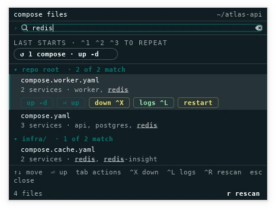

v0.6.0
Find and rerun Compose stacks
Type a file path or service name as soon as the picker opens. Repeat one of the last three starts, run actions on the selected file, or restart a stopped stack from its pane.
